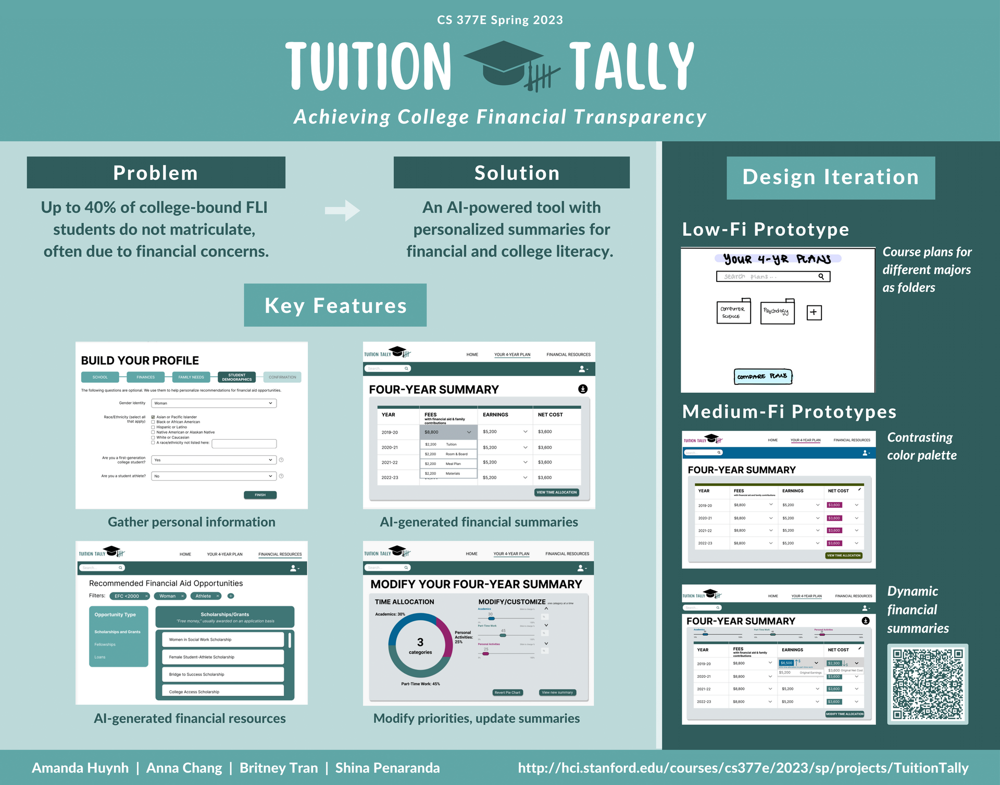
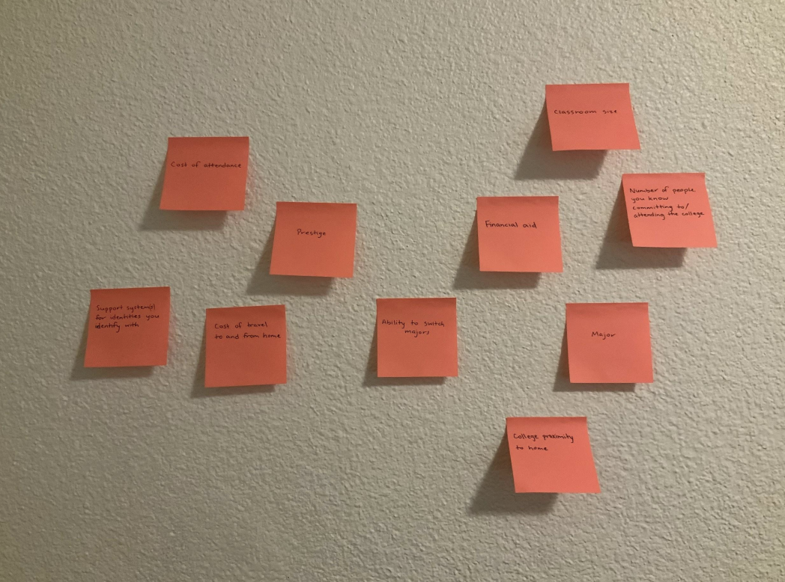
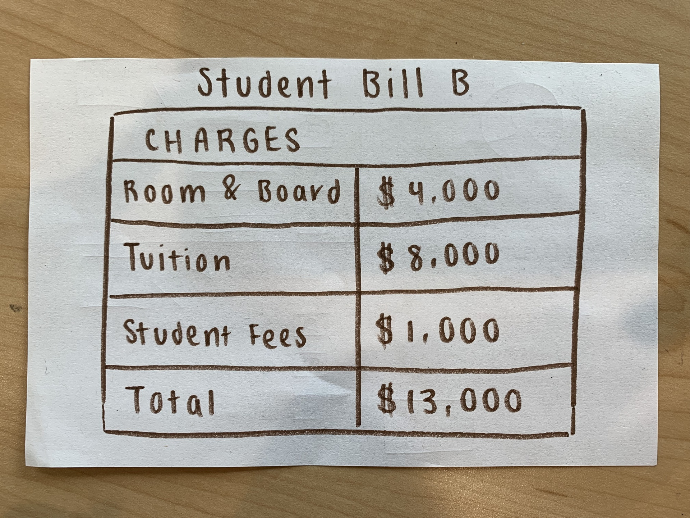
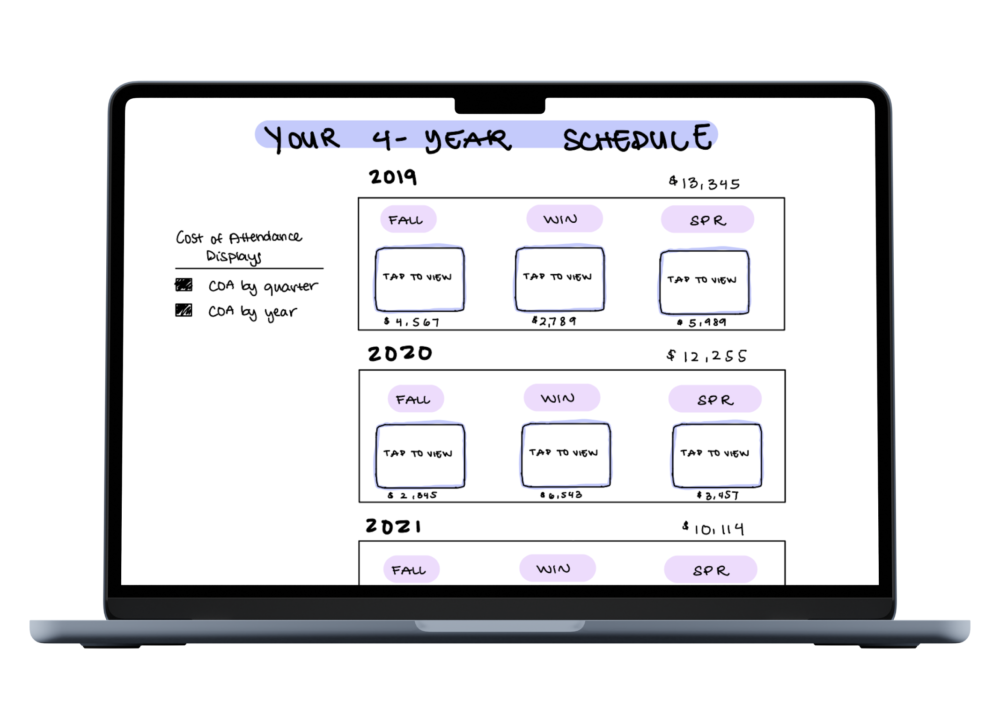

All students deserve access to tools to tackle financial challenges in higher education. A quarter-long project for HCI course Designing Solutions for Global Grand Challenges, our team designed a medium-fi prototype of TuitionTally, a tool using foundation models (Wizard of Oz) to prioritize student financial transparency. TuitionTally takes into consideration personal circumstances to communicate accurate associated costs and personalized financial resources for incoming and current college students.

needfinding
We wanted to focus on potential challenges faced by FLI high schoolers matriculating to college.
Summer melt: when high school graduates fail to matriculate to their intended institutions during their summer transition before college.
We met Teresa, a current community college student applying to transfer to a 4 year college who was previously impacted by summer melt. We were surprised that she was giving up on her own college success and experience in order to pave a more stable and academically-prepared path for her younger siblings. It would be game changing if FLI students could plan for their futures while taking the rest of their families into consideration.
How might we help FLI students share 4-year plans with one another?
We met Betty, the director of the Stanford Summer Engineering Academy and the Leland Scholars Program. We were surprised that the existing summer transition programs provided for incoming FLI Stanford students intentionally had limited space in order to maintain an intimate, close-knit community. IIt would be game changing if all FLI students were able to access personalized resources and support during their transition. How might we present real-world scenarios to new students before arriving on campus?
We met Vanessa, a current Sociology coterminal Master's student at Stanford University. We were surprised that despite feeling extreme pressure to pursue a STEM degree for the financial opportunities post-graduation, Vanessa decided to switch to a non-STEM degree. It would be game changing
FLI students were informed about different paths that led to financial stability and academic success. How might we help FLI students share 4-year plans with one another?
experience prototypes
Sample of our team's experience prototypes for further needfinding.
Personalized College Search Filtering
Each tester ranked college characteristics in order of importance.
TESTING ASSUMPTION
FLI students prioritize personal situations over academic interests.
INTERVIEWEES...
Ranked cost of attendance high
liked being able to separate cost-related notes according to personal circumstances


Breaking Down Student Bills
Each tester presented with student bills varying in levels of detail.
TESTING ASSUMPTION
Students want to see a breakdown of student bill.
INTERVIEWEES...
Wanted financial guidance, but with limitation
Thought seeing income AND expenses side-by-side helped alleviate stress and increased feelings of control over their financial situation
More Context "I don't know these classes since I'm not in college yet."
Customizability "Do I already need to know what major I want to do?"

Flexibility "Is there a way for me to not put in that information?"
low-fi prototype
After developing our product concept through various iterations of sketches and storyboards, we proceeded with the following core tasks.
Simple Task.
Taking personal circumstances into consideration, use foundation models to generate a course plan with COA. Moderate Task. Modify the plan generated by the foundation models. Complex Task. Generate and compare plan variations for different majors.
With these goals in mind, we created a low-fidelity prototype. This was further tested amongst 4 participants meeting our target demographic -- FLI high school seniors planning to matriculate to college.
medium-fi prototype
Given feedback and further iterations, we concluded the class with our medium-fidelity prototype. Key changes in product functionality and interface between low-fidelity and medium-fidelity prototypes are outlined below.
Simple Task. Taking personal circumstances into consideration, use foundation models to generate a 4-year financial breakdown. Moderate Task. Based on generated net-cost, provide recommended personalized resources based on the user profile. Complex Task. View and adjust time allocations based on personal circumstances and update the financial breakdown.